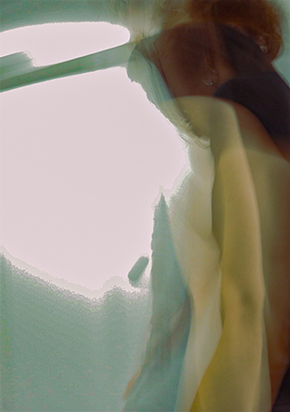

For this second image, I really was running out of images to choose from. It had gotten dark at this time during the day and my pictures ended up looking pretty “meh”. This image is of me actually, and it’s a total accident. I believe that the settings were still set up for outdoor shooting, and my classmate and I were walking back to the classroom. He accidentally tapped on the screen of the camera, which created this. To me, it looks exactly what I would describe what “dissassociation” feels like in a physical manner. I didn’t want to edit it too much, but I threw on a blue-green color filter, as well as boosted the contrast and lowered the exposure. The boost in contrast was to show the different motions that I went through while walking (you can see 3 different shots if you look close enough).
 Go to first image Go to homepage